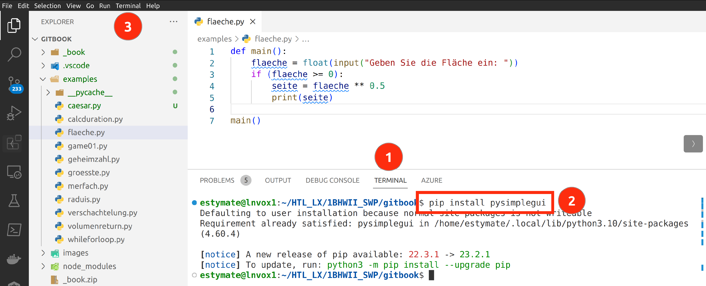
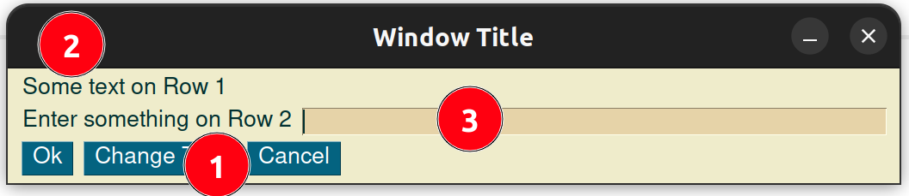
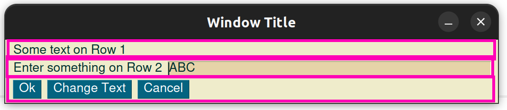

Ein minimales GUI Programm
In diesem Abschnitt entwickeln wir ein erstes GUI Programm. Zuerst müssen wir das PySimpleGUI Modul installieren und anschließend den Code für das Minimalprogramm starten.
Während das Minimalprogramm für die Turtle nur zwei Zeilen hatte, ist es hier schon etwas mehr.
Installation des PySimpleGUI Moduls
Python Module werden über sogenannte Pakete verteilt, wobei ein Paket mehrere Module enthalten kann. Häufig werden die Begriffe Module und Pakete jedoch synonym verwendet.
Um ein Python Paket zu installieren benutzen wir den Python Paketmanager. Dieser wird standardmässig mit Python mitgeliefert und verfügt über Funktionen zum installieren, deinstallieren oder auflisten von Python Paketen.
In VS Code kannst du im Terminalbereich folgenden Befehl eingeben:
pip3 install pysimplegui
In der folgenden Abbildung siehst du wie das Paket installiert wird.
Wir klicken zuerst auf Terminal (1) und geben dann den Befehl (2) ein.
Falls kein Terminal geöffnet ist, können wir mit Terminal > New Terminal (3)
ein neues Terminal öffnen.

Das Minimalprogramm
Das Minimalprogramm von PySimpleGUI ist auf dem ersten Blick, sehr Umfangreich. Wir werden es aber Schritt für Schritt aufbauen.
Das Modul importieren und Theme setzen
Beginnen wir mit dem Import des Moduls.
Bis jetzt haben wir stets die Syntax from abc import * benutzt.
Das würde prinzipiell auch hier funktionieren, dann hätten wir
aber auf einen Schlag hunderte Funktionen importiert.
Sauberer ist es das Modul mit einem Alias zu laden:
import PySimpleGUI as sg
Nehmen wir an, es gäbe die Funktion abc in PySimpleGUI.
Dann könnten wir nach dieser Zeile mit py.abc auf diese Funktion zugreifen.
Die erste Aufgabe die wir haben, ist das Theme zu setzen. Das Theme legt fest, welche Farben in unserer GUI verwendet werden. Unter der URL https://t.ly/qp3l findest du sämtliche Möglichkeiten.
Ich entscheide mich für das Theme "SandyBeach".
Die Funktion um das Theme zu setzen heisst theme
und muss nun über den alias sg aufgerufen werden,
Wobei Modulalias und Funktion durch einen Punkt getrennt werden.
Wir schreiben also:
import PySimpleGUI as sg
sg.theme("SandyBeach")
Teste dieses Programm. Es gibt noch nichts aus, aber es sollte auch noch keine Fehlermeldung erscheinen.
13:30
Elemente erstellen und das Layout festlegen
Unser GUI-Programm besteht am Ende aus GUI-Elementen. Diese sind uns aus vielen Softwareprodukten bekannt, wie beispielsweise Buttons oder Eingabetextfelder. Das Layout definiert welche GUI-Elemente an welcher Position angezeigt werden. Wir beginnen mit den drei häufigsten Elementen: dem Button, dem Textlabel und dem Eingabetextfeld.
In der folgenden Abbildungen werden diese GUI-Elemente dargestellt. 
Button (1)
Ein Button ist ein GUI-Element, welches Benutzern die Interaktion mit einem Programm ermöglicht, indem sie darauf klicken, um Funktionen auszulösen. In der obigen Grafik sind alle Elemente in der untersten Reihe Buttons.
Ein Button wird mit sg.Button("Hallo") angelegt.
Das Argument "Hallo" wird auf dem Button angezeigt.
Textlabel (2)
Das Textlabel ist ein nicht-interaktives GUI-Element, das dazu dient, Informationen oder Beschriftungen anzuzeigen. Es ist nicht-interaktiv, da bei einem "Klick" auf das Element üblicherweise nichts passiert. Auch kann ein Benutzer dort nichts eingeben.
Ein Button wird mit sg.Text("Ich bin ein Text") angelegt.
Wobei das Argument "Ich bin ein Text" angezeigt wird.
Eingabetextfeld (3)
Ein Eingabetextfeld ist eine interaktive Benutzeroberflächenkomponente, die es Benutzern ermöglicht, Text einzugeben. Es wird verwendet, um Benutzereingaben zu sammeln, wie z.B. in Formularen oder Suchfeldern.
Ein Button wird mit sg.InputText("ABC", key="eingabe1") angelegt.
Wobei das Argument "ABC" im Texteingabefeld angezeigt wird.
Das zweite Argument key="eingabe1", wird benötigt um später auf
das Texteingabefeld zuzugreifen und die Benutzereingabe auszulesen.
Definieren des Layouts
Das Layout legt fest wie die GUI-Elemente im Fenster angeordnet werden. Mit PySimpleGUI definieren wir die Elemente zeilenweise. In unserem Beispiel haben wir drei Zeilen.

Jede Zeile wird als eine Liste von Elementen definiert. Alle Zeilen zusammen kommen wieder in eine Liste. Das folgende Beispiel zeigt bereits unsere GUI.
import PySimpleGUI as sg
sg.theme("SandyBeach")
# Hier das Layout definieren:
# Das Layout ist eine Liste von Listen
# Jede Zeile wird durch eine Liste definiert
layout = [
[sg.Text("Some text on Row 1")],
[sg.Text("Enter something on Row 2"), sg.InputText("ABC", key="eingabe1")],
[sg.Button("Ok"), sg.Button("Change Text"), sg.Button("Cancel")]
]
# Window erstellen
window = sg.Window("Window Title", layout)
while True:
event, values = window.read()
Dieses Programm solltest du bereits starten können und das gewünschte GUI sollte erscheinen. Jedoch stürzt das Programm noch ab, wenn es geschlossen wird, das ändern wir im nächsten Abschnitt.
Die Event-Loop
Eine Event-Loop (engl. Ereignisschleife) ist ein häufig wiederkehrendes Muster in der Softwareentwicklung, die in vielen Anwendungen verwendet wird. Sie überwacht kontinuierlich ob Ereignisse wie Mausklicks oder Tastatureingaben.
Wenn solch ein Ereignis auftritt, ruft die Event-Loop die entsprechende Funktion auf, um darauf zu reagieren. Nach der Verarbeitung kehrt die Event-Loop zur Überwachung neuer Ereignisse zurück.
Im folgenden Programmstück siehst du die Event-Loop.
Es handelt sich um eine Endlosschleife,
denn die Schleifenbedingung ist immer wahr,
da hier fix der Wert True steht.
In der ersten Zeile der Schleife wird die Funktion read
aufgerufen. Diese Funktion gibt einen Wert zurück,
wenn ein Ereignis (engl. event) eintritt,
also beispielsweise auf einen Button geklickt wird.
Die read-Funktion gibt zwei Werte zurück,
den Namen des GUI-Elements, welches den event bewirkt hat,
in der variable event und eine assoziative Liste aller
aktuellen Werte der GUI-Elemente in der Variable values.
# Event Loop:
# Jede Benutzereingabe kann mit window.read() abgefragt werden
# Diese Schleife läuft so lange, das Programm läuft (Endlosschleife)
while True:
event, values = window.read()
#hier die events (Benutzereingabe unterscheiden)
if event == sg.WIN_CLOSED or event == "Cancel":
break
if event == "Ok":
print("You entered ", values["eingabe1"])
if event == "Change Text":
window["eingabe1"].update("Hallo Welt")
#Fenster Schließen
window.close()
Auf events reagieren
Wie wir in der obigen event Loop sehen haben wir
drei if-Verzweigungen in der Event-Loop.
Jedes if prüft, ob ein gewisser event eingetreten ist,
und führt dann eine Aktion durch.
Die drei wichtigsten Aktionen sind:
Das Programm beenden: Mit dem Schlüsselwort
break, wird die event-Loop gestoppt und danachwindow.close()ausgeführt, was das Programm beendetEinen Wert auslesen und weiterverarbeiten: Mit
values["eingabe1"]können wir auf den aktuellen Wert des GUI-Elementseingabe1zugreifenEinen Wert setzen: Mit
window["eingabe1"].update("Hallo Welt")setzen wir einen neuen Wert ("Hallo Welt") in das GUI-Element mit den Namen"eingabe1".
Zusammenfassung
Das gesamte Minimalprogramm findest du nochmals hier.
import PySimpleGUI as sg
sg.theme("SandyBeach")
layout = [
[sg.Text("Some text on Row 1")],
[sg.Text("Enter something on Row 2"), sg.InputText("ABC", key="eingabe1")],
[sg.Button("Ok"), sg.Button("Change Text"), sg.Button("Cancel")]
]
window = sg.Window("Window Title", layout)
while True:
event, values = window.read()
if event == sg.WIN_CLOSED or event == "Cancel":
break
if event == "Ok":
print("You entered ", values["eingabe1"])
if event == "Change Text":
window["eingabe1"].update("Hallo Welt")
window.close()